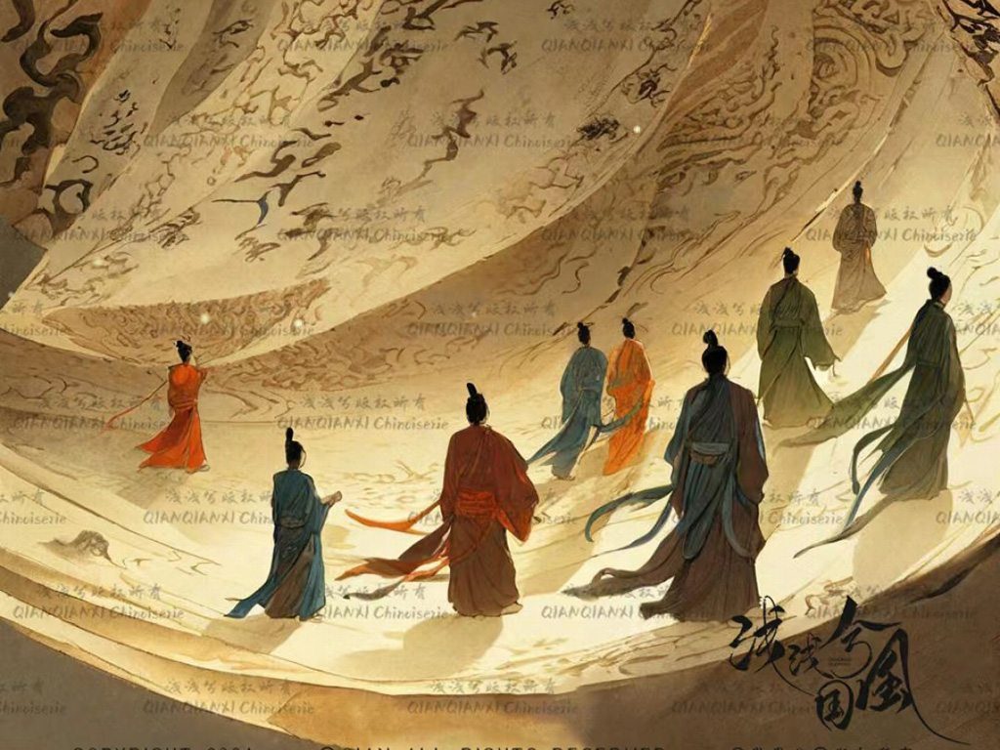

中华文化
中华文化源远流长，中华文明博大精深，不仅赋予中国式现代化深厚底蕴，而且赋予中华民族现代文明深厚内涵。习近平总书记在文化传承发展座谈会上强调，“要坚定文化自信、担当使命、奋发有为，共同努力创造属于我们这个时代的新文化，建设中华民族现代文明”。中华优秀传统文化在建设中华民族现代文明中发挥着不可替代的重要作用。我们要深入学习领会习近平总书记重要讲话精神，不断深化对文化建设的规律性认识，自觉传承和弘扬中华优秀传统文化，为建设中华民族现代文明作出更大贡献。
中华民族在农耕时代就创造了举世公认的灿烂文化和辉煌成就，成为世界四大文明中唯一没有中断的文明，展示了中华文明深厚底蕴、坚韧品格与历久弥新的生命活力。这一活力源于中华文明具有突出的连续性和创新性。
纵观源远流长、生生不息的中华文明发展史，我们深深感受到历尽沧桑而绵延不断的中华文明所具有的历史韧性与砥砺之力；披览灿若星汉、哲思深邃的中华古代典籍，我们深深感受到丰富浩瀚而又精深微妙的先哲遗存所具有的思想厚度与思致之美；品赏匠心独运、精美绝伦的中华传统工艺，我们深深感受到素朴稚拙而又精巧雅致的器物营造所具有的设计巧思与创新匠意；寻味情感浓郁、生趣盎然的中华儿女日常习俗与生活美学，我们深深感受到人伦深厚而又礼序井然的传统社会所具有的生活智慧与沛然生机。拥有如此深厚博大的优秀文化传统与古代文明，新时代的文化建设就有了坚实的基础依托，中华民族现代文明就有了深厚的底蕴支撑。
在漫长的历史长河中，各族人民共同创造了丰富多彩的中华文化，铸就了中华民族共有精神家园，汇聚起生生不息、团结奋进的强大精神动力。中华民族保持着恢宏格局与开放胸怀，在文明交流互鉴中借鉴和吸纳世界优秀文明成果，在丰富人民精神世界、创造中国式现代化的文化形态中不断彰显着新的活力，赋予中华民族现代文明以深厚底蕴。面对新时代新的文化使命，我们要立足文化高质量发展，发扬中华优秀传统文化的宝贵精神和价值观念，确立创造时代文化精品和传世之作的高远志向，高质量推动文化传承创新水平，高标准提供文化服务与产品供给，使中华文明之花更加璀璨繁盛。